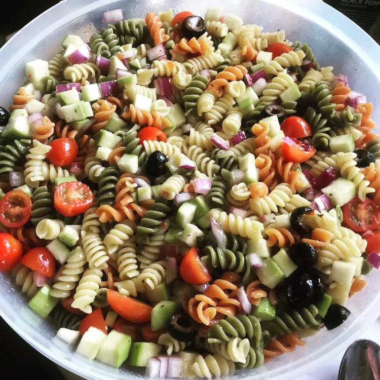

Odin Recipes

Rainbow Pasta Salad II
This is a really quick and easy pasta salad. Great for picnics and BBQ's.
Bring a large pot of lightly salted water to a boil. Add pasta and cook for 8 to 10 minutes or until al dente;
drain and rinse in cold water.
Purported to make you feel like "having your brains smashed out by a slice of lemon wrapped round a large gold brick".
Ingredients
- 1 (16 ounce) package tri-colored pasta assortment
- 2 large tomatoes, diced
- 1 large cucumber, peeled and diced
- 1 red onion, finely chopped
- 1 (16 ounce) bottle Italian-style salad dressing
Directions(Steps)
- Step: 1
Bring a large pot of lightly salted water to a boil. Add pasta and cook for 8 to 10 minutes or until al
dente; drain and rinse in cold water.
- Step: 2
In a large bowl combine tomatoes, cucumbers, onion, cooled pasta and Italian dressing.
Refrigerate overnight, or for at least 1 hour.